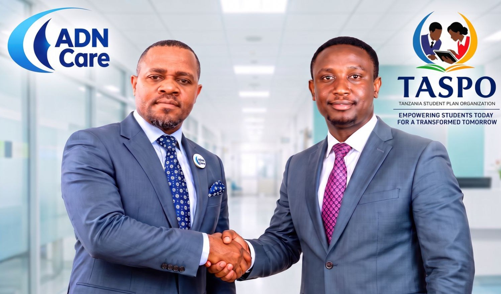

ADN Care and TASPO collaboration
ADN Care and TASPO recognise the importance of combining healthcare expertise with community advocacy and social development.

ADN Care
Under the leadership of Mr. Ali Doto Ntegwa
ADN Care is a healthcare-focused institution committed to improving access to healthcare services and promoting the well-being of individuals and communities.
Under the leadership of Mr. Ali Doto Ntegwa, ADN Care seeks to contribute to improved healthcare delivery, with particular interest in addressing health-related challenges, including dermatological conditions and other healthcare needs affecting vulnerable populations.
Through collaboration with community organisations and other stakeholders, ADN Care aims to strengthen healthcare access, promote awareness, and support people who may face barriers to essential medical services.
Tanzania Student Plan Organisation (TASPO)
TASPO works to promote inclusive development, social protection, education, health awareness, and equal opportunities for marginalised and underserved communities.
Its areas of interest include:
- Albinism advocacy and protectionPromoting awareness, protection, dignity, and access to protective resources for persons with albinism.
- Dermatological health supportConnecting individuals with dermatological healthcare services, medical professionals, and potential sources of assistance.
- Marginalised communitiesAdvocating for the inclusion, dignity, and empowerment of people facing social and economic exclusion.
- Education and student welfareSupporting vulnerable students through educational opportunities, sponsorship initiatives, and health-related interventions.
- Resource mobilisationBuilding partnerships with local and international organisations, foundations, development partners, and humanitarian institutions to mobilise support for underserved populations.
TASPO believes that every individual deserves dignity, equal opportunities, access to essential services, and the chance to live a productive life regardless of their social or physical circumstances.
Strategic collaboration between ADN Care and TASPO
Their collaboration seeks to establish a practical support framework for persons with dermatological conditions, persons with albinism, and other marginalised groups who require medical attention, protection, social support, and access to opportunities.
Through this partnership, the two institutions aim to:
- Facilitate access to dermatological consultations and appropriate healthcare services.
- Identify and connect vulnerable individuals with relevant hospitals and healthcare professionals.
- Mobilise financial, medical, material, and institutional support through partnerships with development organisations and potential donors.
- Promote awareness and education on dermatological health and the protection of marginalised communities.
- Establish partnerships with regional, continental, and international institutions.
- Develop sustainable initiatives that improve the quality of life of underserved populations.
Our shared vision
To build a more inclusive East African community where healthcare, dignity, protection, and equal opportunities are accessible to everyone, particularly those who are most vulnerable.
Our commitment
ADN Care and TASPO are committed to working with governments, hospitals, NGOs, humanitarian organisations, development partners, diplomatic networks, and community leaders to create meaningful and sustainable social impact.
Together, we believe that healthcare should go beyond hospital walls, and social inclusion should go beyond words. It must translate into practical action, partnerships, and measurable change in people's lives.
Contact and partnership enquiries
ADN Care
Mr. Ali Doto Ntegwa, Founder
Building Partnerships. Restoring Dignity. Transforming Lives.
Your support helps TASPO bring protection, health awareness and opportunity to people with albinism and other marginalised groups across Tanzania.